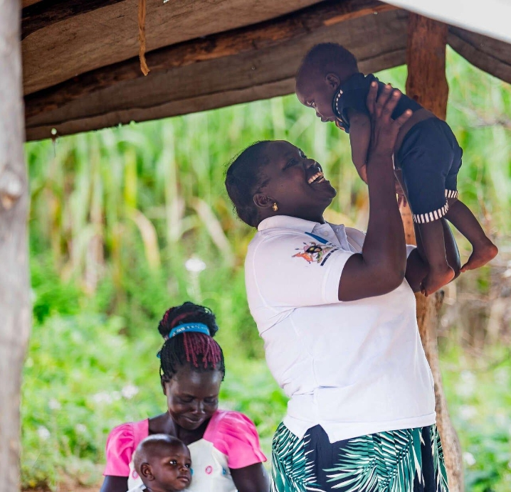
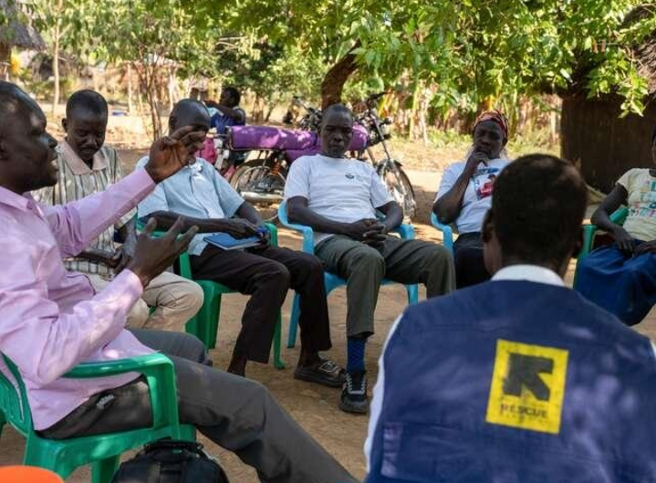
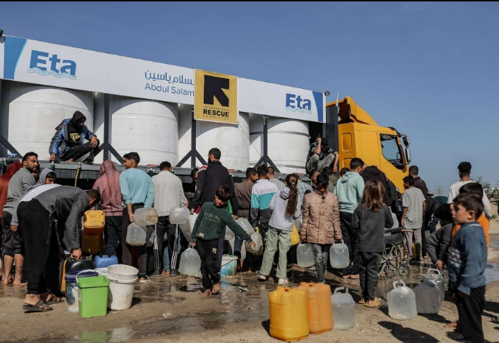
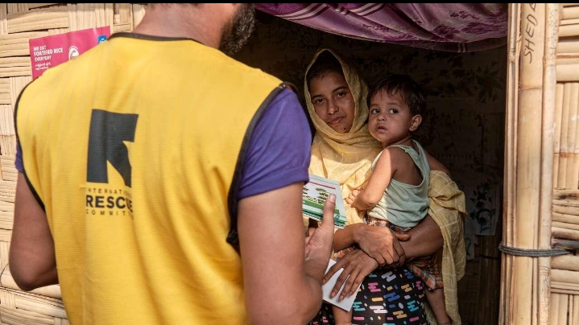

Working Around the World
The International Rescue Committee works in countries affected by conflict, displacement and humanitarian emergencies. Its programmes support individuals and communities as they recover and rebuild.
The organisation works with local communities and partners to respond to different humanitarian needs.

IRC and Uganda
Uganda hosts refugees and other communities affected by displacement. Humanitarian organisations work with communities and partners to support access to essential services and opportunities for recovery.
For current information about IRC's work and presence in Uganda, visit the official organisation website.
Visit Official IRC WebsiteSupporting Communities

Community Engagement
Working with communities to understand their needs and priorities.

Emergency Response
Responding to urgent needs during humanitarian emergencies.

Refugee Support
Supporting people who have been forced to leave their homes.